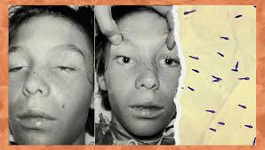

Tabla de Contenidos
Botulismo
Descripción
El botulismo es una enfermedad grave causada por la toxina de la bacteria Clostridium botulinum, que afecta los nervios y puede provocar parálisis. Generalmente se transmite a través de alimentos contaminados o heridas infectadas.
Principales Causas
- Alimentos contaminados: El botulismo alimentario ocurre al consumir alimentos mal conservados o enlatados en casa que contienen la toxina botulínica, especialmente en productos poco ácidos como vegetales, carnes y pescados.
- Heridas infectadas: El botulismo de heridas se desarrolla cuando las bacterias Clostridium botulinum contaminan una herida y producen toxinas.
- Botulismo infantil: Los bebés pueden desarrollar botulismo al ingerir esporas de la bacteria (generalmente presentes en miel o polvo), que luego crecen y producen toxinas en el intestino.
- Botulismo por inhalación o iatrogénico: Puede ocurrir en casos raros por inhalar la toxina en laboratorios o a través de mal uso de inyecciones de toxina botulínica (botox).
Síntomas
Los síntomas del botulismo suelen aparecer entre 12 y 36 horas después de la exposición a la toxina e incluyen:
- Debilidad muscular: Comienza en los músculos faciales y puede extenderse a los brazos, piernas y músculos respiratorios.
- Visión borrosa o doble.
- Dificultad para hablar y tragar.
- Sequedad en la boca.
- Parálisis progresiva: En casos graves, puede afectar los músculos respiratorios, lo que puede ser potencialmente mortal sin tratamiento adecuado.
Pruebas
- Examen clínico: Evaluación de los síntomas típicos como debilidad muscular y parálisis, junto con la historia de consumo de alimentos sospechosos o heridas recientes.
- Análisis de sangre, heces o contenido gástrico: Se busca la presencia de toxina botulínica o de la bacteria Clostridium botulinum en muestras del paciente.
Tratamiento
- Antitoxina: Se administra una antitoxina lo antes posible para neutralizar la toxina botulínica circulante y prevenir la progresión de los síntomas. No puede revertir el daño ya causado, pero puede detener el empeoramiento.
- Antibióticos: Solo en casos de botulismo de heridas, se utilizan antibióticos para tratar la infección, aunque no tienen efecto sobre la toxina.
| Tipo de Botulismo | Alimentario | Infantil | Por heridas | Iatrogénico |
|---|---|---|---|---|
| Síntomas | Debilidad muscular, visión borrosa | Llanto débil, dificultad para succionar | Parálisis progresiva | Debilidad muscular generalizada |
| Tratamiento | Antitoxina, ventilación asistida | Inmunoglobulina, soporte respiratorio | Limpieza quirúrgica, antibióticos | Interrupción del tratamiento, antitoxina |